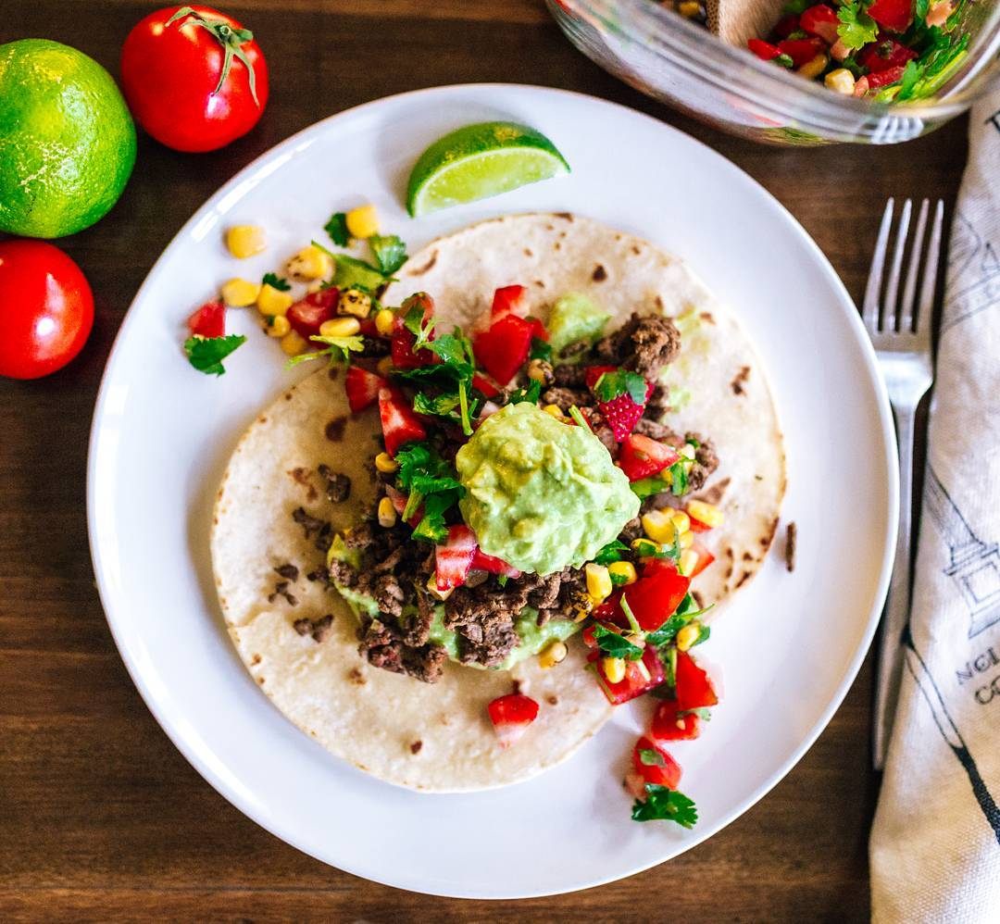

Steak Tacos

Description
Steak tacos are one of my favorite summer time meals. Savory flank steak, with some strawberry salsa, a scoop of guac and a squeeze of lime. It's the perfect meal to enjoy on a warm summer day!
Ingredients:
- Flank Steak
- Tomatoes
- Onions
- Cilantro
- Strawberries
- Corn
- Cumin
- Cayenne
- Avocado
- Limes
Steps:
- Season the steak with the spice rub, and let it come to room temperature. This always helps with the outside not burning, while the inside stays raw.
- To make the strawberry salsa, chop up tomatoes, onion and cilantro. Toss it in a bowl with the corn, and squeeze some lime juice. Add some salt and cumin to taste.
- To make the guac, smash some avocadoes, add a generous amount of salt and lime juice. I also like to add a good amount of cayeene to give it a zing.
- To assemble the tacos, I always add a dollop of the guac, then chop up some steak to let it sit on it. Then top if off with some strawberry salsa, and more guac.
- Add a squeeze of lime juice and enjoy!